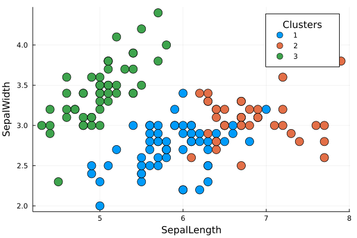
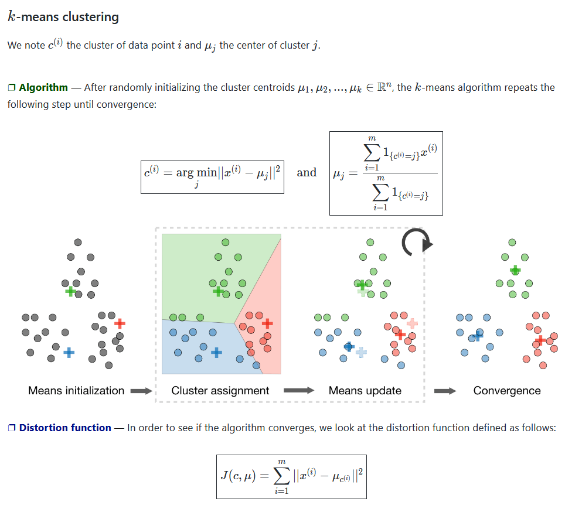
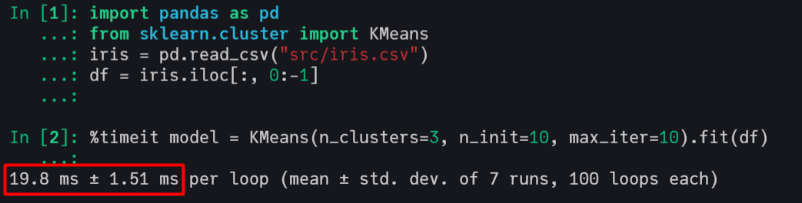
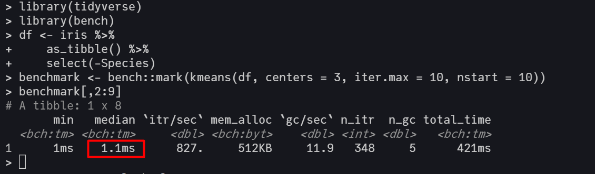

Overview of K-Means and Code
It's a cluster algorithm based on centroids. The method partitions the data into k clusters, where each observation belongs to a cluster/centroid $k_{i}$. The user needs to provide the number of k cluster desired and to choose the ideal number os k, there are some methods such the elbow-plot or the silhuete-plot that could be implemented with this package.
The K-Means is a iterative method, therefore it optimizes the measure of intra-cluster variance through a sequence of iterations detailed below. There is a equivalence between the sum of squared error (SSE) and the total intra-cluster variance, Kriegel (2016), which allows us optimize the SSE in the code.
The inspiration for K-Means came from reading some articles (in the references) and watching Andrew NG lectures and StatQuest videos about it. Then, we start prototype the pseudo-code in Julia, which result in this package.
Pseudocode
- Initialize k centroids by K-Means++ algorithm or by random init.
- Calculate the distance of every point to every centroid.
- Assign every point to a cluster, by choosing the centroid with the minimum distance to the point.
- Calculate the Total Variance Within Cluster by the SSE of this iteration.
- Recalculate the centroids using the mean of the assigned points.
- Repeat the steps 3 to 5,
maxitertimes, until reaching convergence with minimum total variance at step 4.
After that, repeat all steps nstart times and select the centroids with the minimum total variance.
The default arguments nstart, maxiter and init in the code are 10, 10, and :kmpp, respectively. But could also be changed by the user changing the args in the function kmeans(data, K, nstart=10, maxiter=10), for example.
The default initialization is the K-Means++ algorithm (:kmpp) because it achieves faster convergence than the random method, which can be changed to random initialization (:random).
Cool vizualizations that explain the K-Means algorithm
Figure 01 - From Stanford ML CheatSheet
Figure 02 - From K-Means wikipedia page
{kind=link}

Benchmarking the algorithm
# load packages
using ClusterAnalysis, RDatasets, DataFrames, BenchmarkTools
# load iris dataset
iris = dataset("datasets", "iris");
df = iris[:, 1:end-1];
# parameters of k-means
k, nstart, maxiter = 4, 10, 10;
# benchmarking the algorithm
@benchmark model = kmeans($df, $k, nstart=$nstart, maxiter=$maxiter)This implementation has an excellent computational performance, being faster than Scikit-Learn's KMeans and very close to the kmeans from R, which call C and FORTRAN in its source code.
Scikit-Learn with C in backend
R with C and FORTRAN in backend
Machine settings used in benchmarking Processor: Intel(R) Core(TM) i5-7200U CPU @ 2.50GHz 2.71 GHz RAM: 8,00 GB
References and Papers
- First paper that mentioned K-Means.
- Pseudo-Code utilized to prototype the first code extracted from the book Information Theory, Inference and Learning Algorithms.
- K-Means++ paper with the KMeans++ initialization that we will add soon.
- Stanford Slides about K-Means.
- Kriegel, Hans-Peter; Schubert, Erich; Zimek, Arthur (2016). "The (black) art of runtime evaluation: Are we comparing algorithms or implementations?".
K-Means Struct
struct KmeansResult{T<:Real}
K::Int
centroids::Vector{Vector{T}}
cluster::Vector{Int}
withinss::T
iter::Int
end